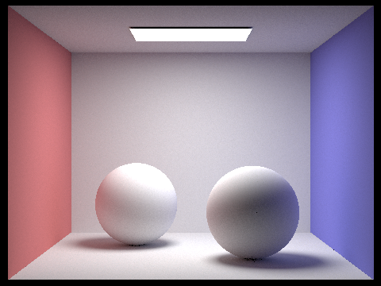
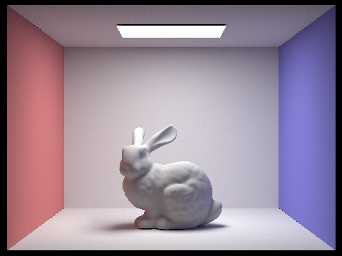
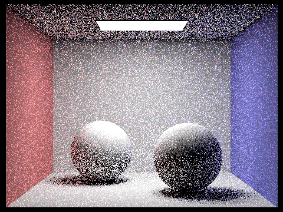
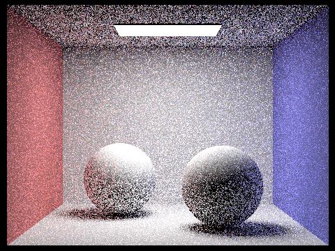
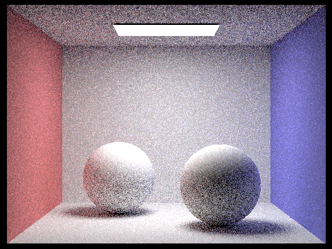
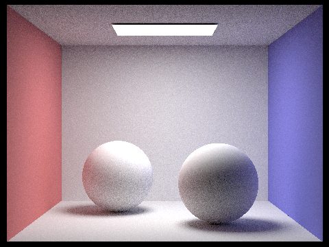

Part 4: Global Illumination
To implement indirect lighting, we first check to make sure that the maximum ray depth is greater than or equal to 1 - otherwise, we return the one bounce radiance. We accumulate the one bounce radiance and sample the bsdf from the intersection passed in. Then, we obtain the direction vector by transforming the wi vector (populated in the call to sample_f) into world space. We use this direction and the depth of the ray passed in to make a new ray and a new intersection. If there is an intersection between the new ray and new intersection, we recursively call at_least_one_bounce_radiance on this new ray and intersection, find the cosine term by dotting the intersection’s n term with the direction, and then we multiply the recursive return value with the bsdf and cosine and then divide it by the pdf. We accumulate this in the L_out vector.
To implement Russian Roulette, we set our probability to 0.7 and call coin_flip on this probability. We then divide the accumulated term by the Russian Roulette probability along with the pdf.
Spheres rendered with global illumination:
Bunny rendered with global illumination:
isAccumBounces turned off for m=0, 1,2 ,3 4, 5:

In the second and third bounce of light we can see that the light bouncing off of the spheres from the floor and walls gets dimmer and dimmer. THese bounces of light make the final image look much more convincing because it simulates light reflecting off of the surfaces around the object, which creates more convincing shadows.
Max ray depths of 0, 1, 2, 3, 4, and 5:

As max_depth_ray increases, we can see more and more of the color from the walls bleeding into the shadows, as well as the light reflecting off the floor onto the bunny. This gives us more convincing shadows and color information, and allows us to simulate soft shadows and ambient occlusion.
When max_ray_depth = 0 and Russian Roulette, we only have the zero bounce light.
When max_ray_depth = 1 and using Russian Roulette, we can see basic shadow information, but we don’t get any information from bounce lighting off the walls of the color box.
max_depth_ray = 2 and Russian Roulette:
max_depth_ray = 3 and Russian Roulette:
max_depth_ray = 4 and Russian Roulette:
max_depth_ray = 100 and Russian Roulette:
Comparing sampling rates with 4 light rays:
Sampling rate = 1:
Sampling rate = 2:
Sampling rate = 4:
Sampling rate = 8:
Sampling rate = 16:

Sampling rate = 64:
Sampling rate = 1024:
Increasing the sampling rate reduces the amount of noise we see in the image, particularly in soft shadows.